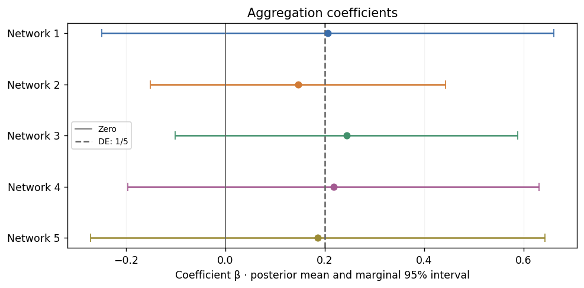
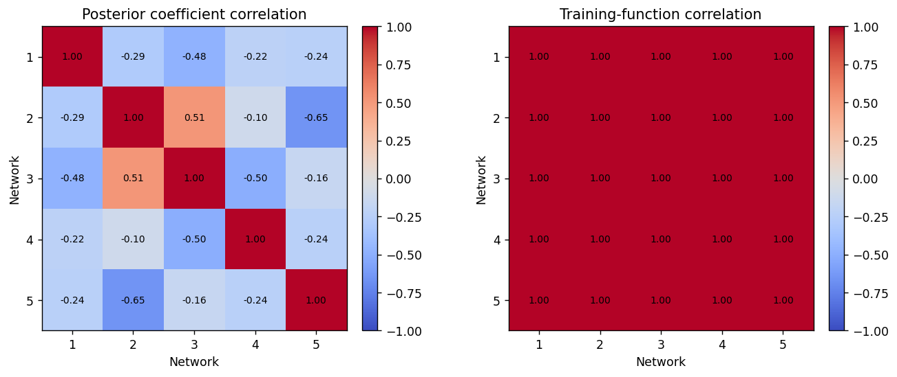
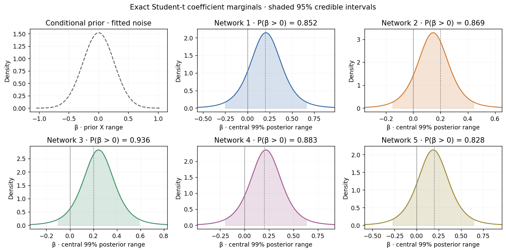
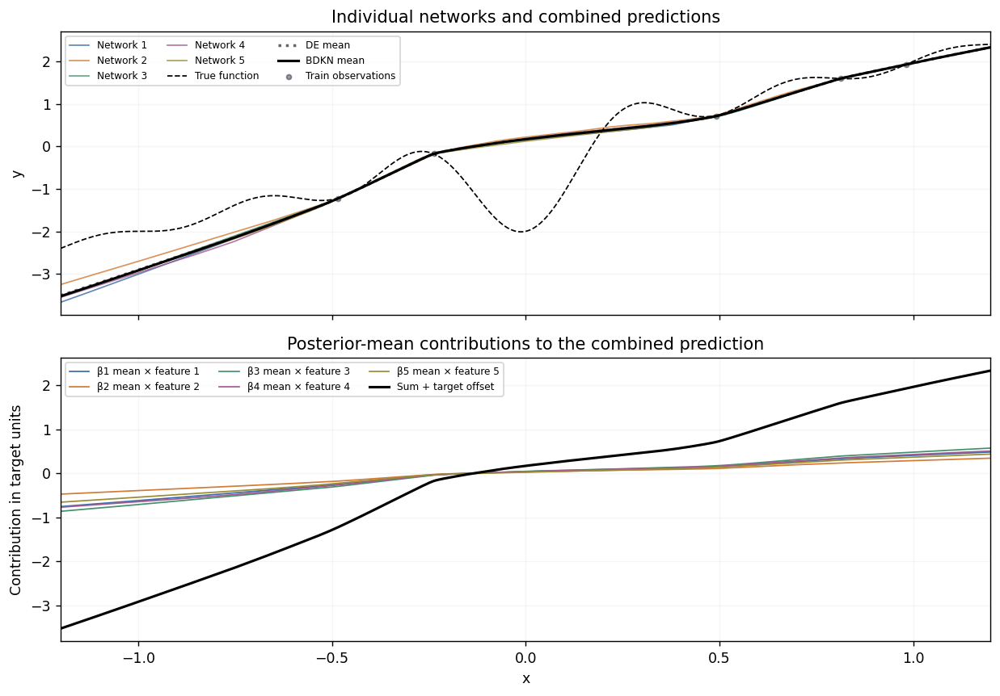
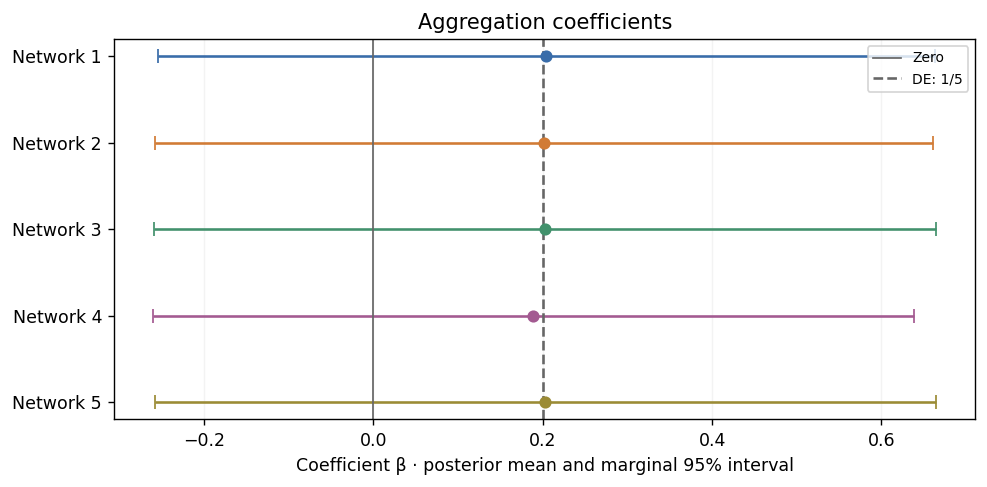
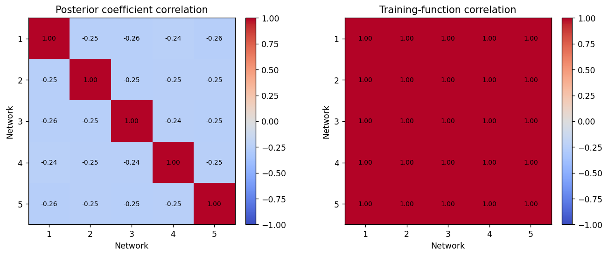
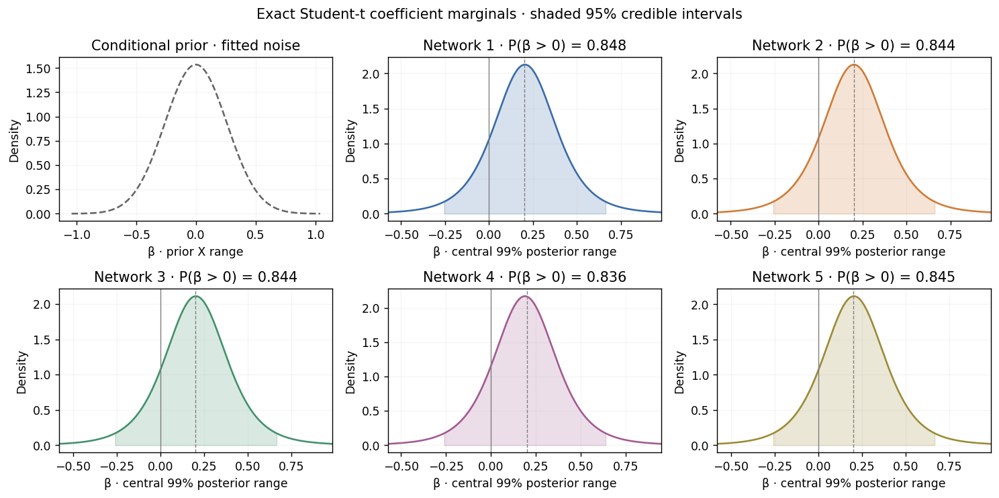
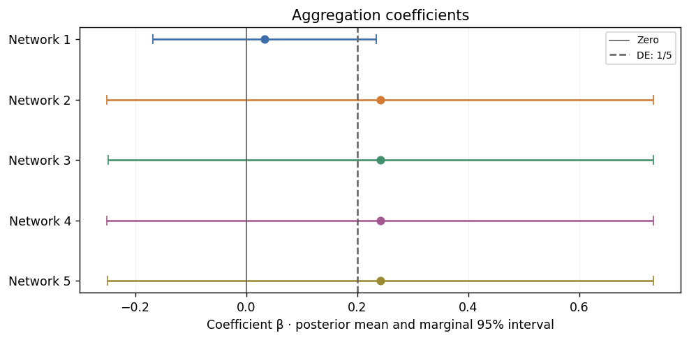
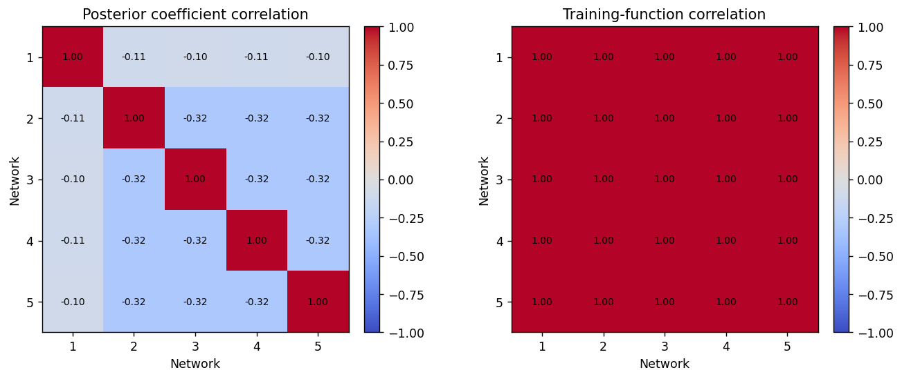
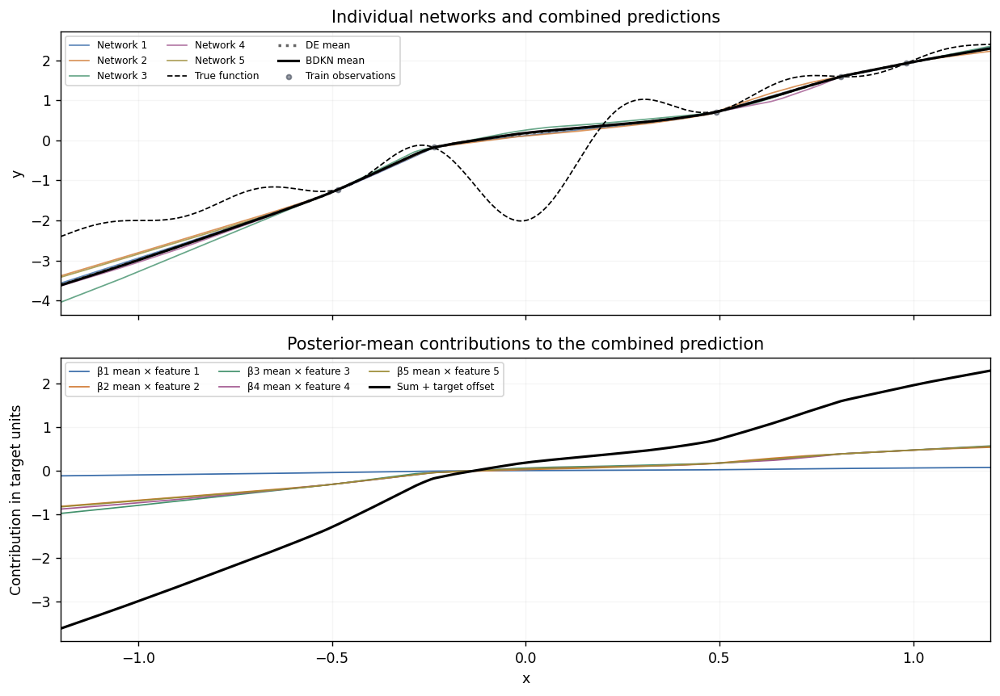

Regression comparison
Download resultsAggregation weights
\widehat y(x)=y_{\rm mean}+y_{\rm std}\sum_{h=1}^{H}\beta_h\mu_h(x)Coefficients can be negative and need not sum to one. Intervals describe coefficient uncertainty; the dashed reference is DE’s fixed 1/H weight.
BDKN


Each density panel uses its own X range for readability; coefficient intervals above share a common axis. Prior reference conditions on fitted noise. Contribution shares use held-out inputs; test targets are used only for scoring.
| Network | β mean | 95% low | 95% high | P(β > 0) | Contribution share | Test RMSE | Test NLL |
|---|---|---|---|---|---|---|---|
| 1 | 0.18378 | -0.28768 | 0.65525 | 0.81884 | 0.18558 | 0.77438 | 14831.39553 |
| 2 | 0.21712 | -0.25401 | 0.68825 | 0.85530 | 0.21236 | 0.72161 | 5870.93193 |
| 3 | 0.18694 | -0.26881 | 0.64268 | 0.83002 | 0.18791 | 0.77327 | 3837.63935 |
| 4 | 0.21394 | -0.25925 | 0.68713 | 0.85120 | 0.21803 | 0.78641 | 25124.08623 |
| 5 | 0.19829 | -0.25603 | 0.65261 | 0.84357 | 0.19610 | 0.73920 | 2290.88784 |
Functional repulsion · BDKN




Each density panel uses its own X range for readability; coefficient intervals above share a common axis. Prior reference conditions on fitted noise. Contribution shares use held-out inputs; test targets are used only for scoring.
| Network | β mean | 95% low | 95% high | P(β > 0) | Contribution share | Test RMSE | Test NLL |
|---|---|---|---|---|---|---|---|
| 1 | 0.20639 | -0.24830 | 0.66109 | 0.85205 | 0.20778 | 0.77910 | 38133.27712 |
| 2 | 0.14600 | -0.15102 | 0.44302 | 0.86895 | 0.14336 | 0.72752 | 5696.54878 |
| 3 | 0.24407 | -0.10057 | 0.58871 | 0.93583 | 0.24290 | 0.76099 | 11849.53865 |
| 4 | 0.21748 | -0.19635 | 0.63131 | 0.88268 | 0.22035 | 0.78022 | 16291.20207 |
| 5 | 0.18602 | -0.27087 | 0.64291 | 0.82839 | 0.18561 | 0.75499 | 27137.54380 |
Weight repulsion · BDKN




Each density panel uses its own X range for readability; coefficient intervals above share a common axis. Prior reference conditions on fitted noise. Contribution shares use held-out inputs; test targets are used only for scoring.
| Network | β mean | 95% low | 95% high | P(β > 0) | Contribution share | Test RMSE | Test NLL |
|---|---|---|---|---|---|---|---|
| 1 | 0.20430 | -0.25479 | 0.66339 | 0.84778 | 0.29849 | 1.64911 | 543724.60503 |
| 2 | 0.20102 | -0.25830 | 0.66033 | 0.84416 | 0.13282 | 1.18532 | 9348.98503 |
| 3 | 0.20255 | -0.25959 | 0.66470 | 0.84448 | 0.17110 | 0.80357 | 15534.23571 |
| 4 | 0.18906 | -0.25978 | 0.63790 | 0.83584 | 0.18617 | 1.81815 | 4450.41493 |
| 5 | 0.20307 | -0.25822 | 0.66436 | 0.84544 | 0.21143 | 0.63899 | 2066.08861 |
First-order repulsion · BDKN



Each density panel uses its own X range for readability; coefficient intervals above share a common axis. Prior reference conditions on fitted noise. Contribution shares use held-out inputs; test targets are used only for scoring.
| Network | β mean | 95% low | 95% high | P(β > 0) | Contribution share | Test RMSE | Test NLL |
|---|---|---|---|---|---|---|---|
| 1 | 0.03276 | -0.16852 | 0.23404 | 0.65348 | 0.03243 | 0.75596 | 8979.99673 |
| 2 | 0.24154 | -0.25052 | 0.73360 | 0.86866 | 0.23463 | 0.72214 | 14590.81147 |
| 3 | 0.24207 | -0.24903 | 0.73318 | 0.86953 | 0.25301 | 0.86511 | 30368.56241 |
| 4 | 0.24164 | -0.25043 | 0.73370 | 0.86874 | 0.24206 | 0.79842 | 45099.89566 |
| 5 | 0.24210 | -0.24948 | 0.73369 | 0.86935 | 0.23788 | 0.75120 | 16310.90533 |